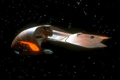
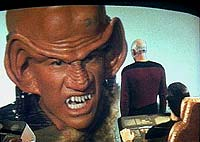
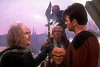
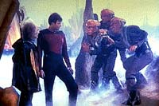

|
MANCHETE
DO EPISÓDIO
Novos inimigos criados para A Nova
Geração sofrem com caracterização
Episódio
anterior | Próximo
episódio
Sinopse:
Data Estelar: 41386.4.
A Enterprise persegue uma nave Ferengi que roubou um conversor de
energia T-9 de um posto avançado da Federação. A perseguição os
leva até a órbita de um planeta desconhecido do Império T'Kon,
onde as duas naves são mantidas imóveis, com suas energias
rapidamente sendo drenadas.
 Cada
nave culpa a outra, mas as evidências logo mostram que o planeta é
a fonte da drenagem de energia.
Ao se teleportarem para a superfície do planeta, humanos e Ferengis
se encontram pela primeira vez. Juntos, encontram o Portal, guardião
do Império, que os submete a um teste.
O comandante Riker responde corretamente ao desafio e a Enterprise
é poupada. A pedido dele, os Ferengis também são libertados.
Comentários:
"The Last Outpost" trata-se de um episódio
historicamente importante no contexto de Jornada nas
Estrelas: é o primeiro a mostrar os Ferengi. Embora eles já
tivessem sido mencionados em "Encounter
at Farpoint", foi só neste episódio que eles
fizeram sua primeira aparição.
O objetivo inicial era criar uma nova raça de vilões,
exclusivamente para A Nova Geração. Tão evidente
era esse intuito que a definição original dos Ferengi os
classificavam como antropófagos, ou seja, comedores de humanos!
Claramente, o objetivo não foi atingido. Os personagens caricatos e
a atitude abobalhada dos Ferengi vista nesse episódio tirou
completamente a possibilidade de que a audiência os levasse a sério
como vilões de valor e competência comprovados.
 Entretanto,
a crítica à sociedade atual camuflada no interior da cultura
Ferengi (a política mercantilista e a busca incessante por lucros)
acabaria vingando, sendo refinada ao longo da série e
principalmente em Deep Space Nine, com a introdução
de um personagem regular da raça (Quark), que tornaria os Ferengi
simpáticos e interessantes.
Tirando a péssima caracterização dos novos alienígenas, trata-se
de uma boa aventura, que mostra mais uma vez o lado explorador da série,
visto pela primeira vez com intensidade no episódio anterior, "Where
No One Has Gone Before".
Apesar dos diálogos e situações ainda meio automáticas e forçadas,
os personagens já começam a interagir de forma mais natural. A
aproximação entre Geordi e Data começa a aparecer. Ainda assim, o
humor fácil continua sendo priorizado, fazendo com que o pobre Data
se enrole com um prendedor de dedos.
 O
fim do episódio, com vários personagens de dedos presos, é típico
da Série Clássica, mostrando como ainda eram um
pouco prosaicos e nostálgicos os produtores. Até a idéia de
enviar os prendedores de dedos aos Ferengi já havia sido feita na série
original, quando Scotty manda os Pingos para a nave Klingon!
Na área dos efeitos especiais, a situação é conflitante. As
tomadas exteriores da Enterprise e da nave Ferengi são muito boas.
Entretanto, a composição do céu do planeta e a cenografia de sua
superfície deixam a desejar.
O episódio também traz à tona interessantes elementos culturais,
quando faz citação ao filósofo Sun Tzu.
Sun Tzu foi um estrategista chinês que viveu por volta de 320 a 400
a.C. Sua obra, o livro A Arte da Guerra, é o mais antigo
documento conhecido abordando as questões que envolvem estratégias
de campanha.
A frase citada no episódio, "Triunfará aquele que souber
quando lutar e quando não lutar", é um dos cinco princípios
essenciais estabelecidos por Sun Tzu para a vitória.
 Os
outros quatro são "Triunfará quem souber lidar com forças
superiores e inferiores", "Triunfará quem tiver seu exército
animado pelo mesmo espírito em todos os seus níveis",
"Triunfará quem, tendo se preparado, espera pegar o inimigo
despreparado" e "Triunfará aquele que tem capacidade
militar e não sofre com a interferência de seu soberano".
Citações:
Worf - "I say, 'Fight',
sir. There's nothing shameful in falling to a superior enemy."
("Eu digo 'lutar', senhor. Não há vergonha em cair frente a
um inimigo superior")
Picard - "And nothing shameful in a strategic retreat
either."
("E nada vergonhoso em uma retirada estratégica também")
Picard - "Merde."
Ferengi - "And they shamelessly clothe their females,
inviting others to unclothe them. The very depth of perversion."
("E eles vergonhosamente vestem suas fêmeas, convidando outros
a despi-las. A mais profunda das perversões.")
Trivia:
 Armin Shimerman, que neste episódio interpreta o Ferengi Letek,
posteriormente ganharia fama como o Ferengi Quark, da série Deep
Space Nine. Armin, por ter atuado neste episódio,
considera-se como o primeiro Ferengi da história de Jornada. Ele
ainda apareceria na Nova Geração algumas vezes, como o Ferengi
Bractor no episódio do 2º ano "Peak Performance"
e como o próprio Quark em "Firstborn",
episódio do 7º ano.
Armin Shimerman, que neste episódio interpreta o Ferengi Letek,
posteriormente ganharia fama como o Ferengi Quark, da série Deep
Space Nine. Armin, por ter atuado neste episódio,
considera-se como o primeiro Ferengi da história de Jornada. Ele
ainda apareceria na Nova Geração algumas vezes, como o Ferengi
Bractor no episódio do 2º ano "Peak Performance"
e como o próprio Quark em "Firstborn",
episódio do 7º ano.
Darryl Henriques, que aqui interpreta o Guardião do Portal T'Kon,
participou do filme para cinema Jornada nas Estrelas VI - A
Terra Desconhecida, como o Embaixador Romulano Nanclus.
Os atores Tracey Walters e Mike
Gomez, que aqui interpretaram Ferengis, voltariam a aparecer na série
no episódio do 6º ano "Rascals",
como os Ferengis DaiMon Lurin e Berik.
A insígna Ferengi, criada por
Michael Okuda, quer dizer "um cão comendo o outro",
segundo ele, e "é verde como a inveja e o dinheiro",
completa.
O design da nave Ferengi, feito por
Andrew Probert, foi inspirado num caranguejo em forma de ferradura
que ficava na mesa do roteirista do episódio, Herbert Wright.
Ficha
técnica:
História de Richard Krzemien
Roteiro de Herbert Wright
Direção de Richard Colla
Exibido em 19/10/1987
Produção: 007
Elenco:
Patrick Stewart como
Jean-Luc Picard
Jonathan Frakes como William Thomas Riker
Brent Spiner como Data
LeVar Burton como Geordi La Forge
Michael Dorn como Worf
Gates McFadden como Beverly Crusher
Marina Sirtis como Deanna Troi
Wil Wheaton como Wesley Crusher
Denise Crosby como Natasha "Tasha" Yar
Elenco convidado:
Armin Shimerman como Letek
Jake Dengel como Mordoc
Tracey Walter como Karyon
Darryl Henriques como Portal
Mike Gomez como DaiMon Tarr
Episódio
anterior | Próximo
episódio
|